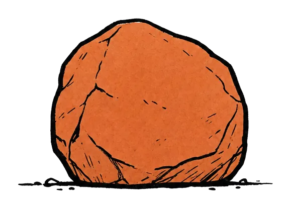
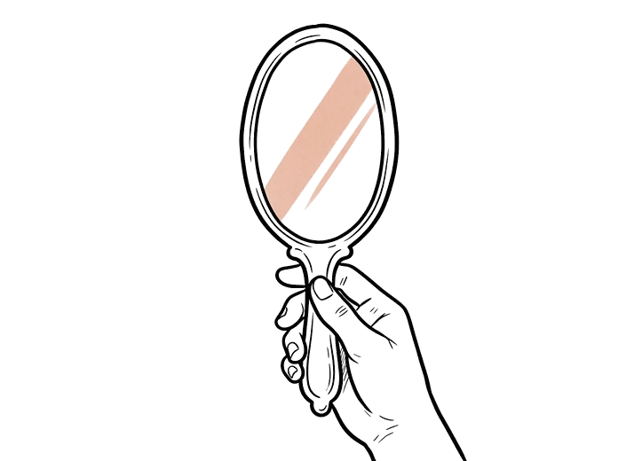
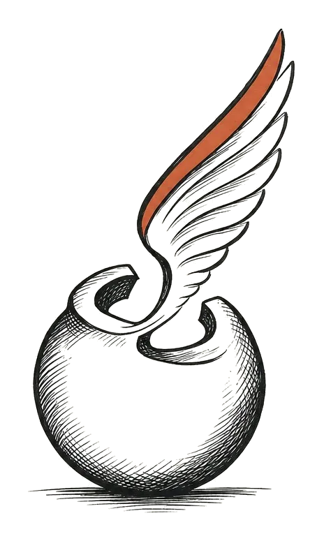

“I just want to feel like myself again.”
For the woman who stopped feeling like herself. After a divorce. After a loss. Or after nothing she can point to — just years of everyone else coming first.
If you've said those words — out loud, or only in your own head — you're in the right place. On the morning of August 8th, women start over. Together. One small step a day, for one full month — August 8 to September 8 — beside women walking the same road.
Money-back guarantee: if it doesn't help, you get every dollar back — any day of the month, plus a week after. One email, no questions.

That's me. If you'd rather hear it than read it, my whole story is narrated here.
Women write to me every day. These are their words, not mine.
“My son doesn't talk to me anymore. I don't know how to fix it.”
“Life over 40 feels like a long wait for… nothing.”
“I know I need something. I just don't know what. I'm on automatic.”
“I never stop and I'm so tired.”
“I don't know how to help my daughter.”
“I feel like a shell of who I was.”
Maybe it was divorce papers after twenty-some years. Maybe you're the one who left, and nobody claps for how hard that was. Maybe he passed, and everyone checked on you for a month and then went back to their lives. Maybe nobody left at all — the kids grew up, the house went quiet, and somewhere in all those years of taking care of everyone, you went quiet too.
Or maybe it's harder than quiet: a grown son or daughter who won't talk to you anymore — and no one to tell how much that one hurts.
However you got here, the question is the same one a thousand women keep typing into the internet at midnight: “Does anyone else…?”
Yes. A whole room of them. Starting the morning of August 8th.
The years nobody sees
“Always welcome, never invited.” Whoever wrote that deserves a medal, because that's the whole thing in five words.
You're on the list for the wedding. Some weeks, nobody calls just to talk. “You're so strong,” they say — often the same people who never quite ask how you are. Some days you make your peace with it — plenty of women tell me “I prefer the peace, honestly.” And some days, they tell me, the quiet sits like a stone on the chest. Both are true. Nobody talks about how both can be true.
And plenty of women burn out this way for years — still showing up, still delivering, still smiling — running on empty where nobody looks.
None of this means something is wrong with you. It means something simpler, and kinder: nobody rebuilds alone on willpower. It was never a willpower problem.
Who this is for
If even one of these is you, you're in the right place.
- You're invisible in your own house — until someone needs something from you.
- You smile in every photo and show up for everyone. At night, when the house goes quiet, you fall apart alone.
- You look in the mirror and don't recognize the woman looking back.
- You gave that relationship your time, your dreams, your identity — and when it ended, you didn't know who you were.
- You carry the whole family — the meals, the appointments, the feelings — and nobody stops to ask how you are.
- You've been the strong one so long you forgot you're allowed to need something.
- You say yes when everything in you means no — and you've stopped even noticing.
- The voice in your head has never once been on your side.
- You're on autopilot — going through the motions of your life, not living it.
- Your child is distant, or gone quiet, and you carry that grief in silence.
- There's a rage in you that you can't explain — years of being overlooked, talked over, taken for granted.
- You're stuck between a life you've outgrown and one you don't know how to step into.
And under all of it, you know there's a version of you that's lighter, freer, fully herself. You just don't know the way back to her — and you're afraid that if you wait much longer, she'll be gone for good.
Who this is not for
You're not broken — so I'm not here to fix you. If you want someone who promises a new life by the weekend, that's not sold here. If you want the big dramatic leap, I don't have one. I have one small step a day, and I won't pretend it's more.
This isn't therapy, and it doesn't pretend to be. It's a daily practice with company. Plenty of women do both.
And it's women only. All of it. That part is not negotiable.
You haven't failed. The tools were half-tools.
By the time a woman lands on a page like this, she has already tried things. Let's be honest about them — because most of them deserve honesty, not mockery.
Therapy. If it helped you understand your life — that's real, keep it. But maybe you noticed: understanding your life doesn't carry you through a Thursday afternoon. Insight is a map. A map is not a walk.
The books. Maybe you read the one everyone read last year — the one about letting people be who they are. Thousands of women loved it, and then wrote reviews like this one: “There is no actual advice in this book… how do I actually handle my family when they confront me about it?”
And this one: “I just have trouble sticking with and practicing the things she says.”
That's not the book's fault. Books end. You close the cover, and Thursday still comes, and the phone still rings, and there's still nobody beside you when it does.
The book gives you the words. It cannot give you the practice. Or the women.
Prayer. If praying is part of your life — keep praying. Nothing here was ever meant to replace that, and nothing here will ever push it on you either. Both kinds of women are welcome in this room, and both stay comfortable.
Time. They said time heals. Time passed. You're still carrying it. Time turns out to be very good at passing and not much else.
The missing piece was never more knowledge
Here's the part that matters:
Knowing was never your problem. You know plenty — more than enough.
The missing piece was smaller, and nobody sells it because it doesn't sound impressive: the daily how — and not doing it alone.
One woman asked the internet: “I don't even know where to start rebuilding. Has anyone else been at absolute zero and climbed out?”
Yes. And every one of them started with a step about this small: Day 1 of Myself Again takes five minutes. It assumes nothing. It was built for the woman starting from the floor.
Why I built this
I grew up in my mother's kitchen.
It was the kind of kitchen women came to. Her friends. The neighbors. Somebody's sister who was “just stopping by” and stayed three hours. They came with coffee cake and they came with their lives — the marriages, the disappointments, the things they couldn't say at home.
I was the quiet kid at the end of the table. And somewhere in those years, without anyone deciding it, I became the one they talked to. I've been listening to women carry heavy things since before I understood what the things were.
I'm telling you that so you know I didn't come to this work from a book. I came to it from that table. No degree. No certificate on a wall. Just a few decades of listening, and one story that changed what I do with my life.
My own life broke once too. I disappeared little by little, trying to keep someone happy — so when I say I've been her, the woman who makes herself smaller until there's almost nothing left, I mean it. That story lives on its own page. This letter is about my mother.
She was 58 when her marriage ended. Thirty-five years. It came apart on an ordinary Tuesday, over a phone left face-down on the kitchen table — that same table. detail invented — his truth replaces it
People think the hard part is the day everything breaks. It isn't. The hard part is the second month — when the casseroles stop coming, the phone goes quiet, and everyone decides you must be doing better.
That's where she was when I came home. She was sleeping in the guest room of her own house. There were dishes in the sink from the week before — and my mother had never once in her life left a dish in the sink. detail invented
I didn't know how to fix it. I couldn't. Nobody fixes thirty-five years.
But I could sit with her in the morning. And every morning, we found one small thing. Not big things — big things were impossible. Open the curtains. Walk to the mailbox. Call the bank about one account. steps invented
Some days the small thing was all she did. It was enough. It kept the day from swallowing her.
And she wasn't alone. Her sister called every Sunday night. A neighbor two doors down — a woman who had walked this same road — started showing up on Thursdays with coffee. people invented
I can't tell you the exact day her light came back. I can tell you about the morning I heard her singing along to the kitchen radio, badly, the way she used to — and that I went to my room and cried like a child. moment invented
It took the better part of a year. Not one month — I won't lie to you about that. But it started small, it started daily, and it held because she didn't do it alone. timeline invented
That's all Myself Again is. The thing that saved my mother, made simple and put in your hands: one small step every morning, and women beside you who understand without being told.
Maybe nobody left you. Maybe the house just went quiet, or the person you used to be feels far away. The rebuilding is the same.
She's 68 now. She has a life she chose — her own place, her own mornings, her people. She knows I tell this story, and she told me to tell it right: slow, small, and never alone. age + blessing to confirm
If you're where she was, I built this for you.

“When I started, I was eating dinner standing over the sink — 26 years of marriage gone, and I could not have told you what food I even liked anymore. Nobody asked me for a leap. One small step every morning, women beside me who understood without me explaining. Day 31, I cooked dinner at my own table for people I chose. Pebble by pebble, I got my whole self back.”
— Karen B., 47
Why one small step a day works — when the big leap never did
Every January proves it: big leaps break. The gym membership, the total life overhaul, the “new me starting Monday.” Two weeks of fire, then the crash, then the guilt — and the guilt is heavier than the thing you started with.
It's not you. It's the size of the step.
Here's an honest number from the publishing world: only about 36% of non-fiction books that get bought ever get finished. The books aren't bad. Reading alone, with nobody expecting you tomorrow, is just how good intentions die.
So Myself Again is built on the opposite bet — the one I watched work at my mother's kitchen table:
A step so small you can't say no to it. Five minutes, maybe ten. Finishable before lunch. Some days it will feel almost too easy. That's the design. A step small enough to take on your worst day is a step you actually take — and a whole month of them in a row is not small at all.
Taken with women who get it. Not an audience. Not followers. A room of women who started the same day you did, reading the same morning note, taking the same small step, telling each other how it went. Every woman in this room knows the difference between advice and company. This is company.
And you're not guessing your way through it. I'll walk you through the same steps that have helped many women before you — one morning at a time, in order, each one ready when you wake.
Small steps are how you get strong enough for the big ones
Someone will say small steps are just avoiding the real work. It's the opposite. The hard conversations, the “no” you've been swallowing for years — those take strength you don't build by reading about them. Week three is literally the week you practice the words.
Maybe you've read the line “no one is coming — the only permission you need is your own.” It's true. Nobody is coming to do this for you.
But nobody said you had to do it alone. Those are different things. The first one is freedom. The second one is just lonely.
The women who finish keep telling me the same thing: the mindset shifts first. Then the world around it.
One month, mapped — August 8 to September 8
No mystery box. Five chapters. One small step a day, and every week closes with one lesson. Here's the whole shape — and a real day in full.

Week 1 · Days 1–7
The Reset
Before you build anything, you put down what you've been carrying.
- Name the one weight you've carried longest — on paper, in one sentence
- Count the sorries: one day of noticing every apology you didn't owe
- One less replay of the thing you keep replaying — mute what drains you
By week's end: the weight has a name — out of your head, on paper. Most women say their shoulders sit a little lower.
The lesson that closes the weekYou can put it down. Carrying it was never the proof you loved them.

Week 2 · Days 8–14
The Mornings & the Voice
The week you take back the first hour of the day — and catch the voice that talks you out of it.
- One thing to look forward to, planted the night before
- The first act of the morning belongs to you — not the phone, not somebody's crisis
- One cruel self-sentence a day, caught and rewritten the way you'd say it to your sister
- Drop the word “just” from one email
By week's end: seven straight mornings that belonged to you — and the habit that catches the voice.
The lesson that closes the weekThe voice learned its lines from someone. You hold the volume.

Week 3 · Days 15–21
The No — scripts week
The week almost nobody else teaches: the actual words for the hard moments.
- The scripts — for when he calls, when family pushes, when the friend asks too much
- Practiced out loud once, alone, where it's safe
- Then one kind, clean “no,” delivered for real
- And for the people you can't avoid — a way to be around them without slipping back into the old you. Tell the room before you see them. Come back after. You don't do it alone.
By week's end: your first real “no” behind you — and the words ready for the next one.
The lesson that closes the weekYou can love them and still say no. Both can be true.

Week 4 · Days 22–28
Her Own Woman
The want-week. What do you want now — not what's left over after everyone else eats first.
- Say one want out loud — yours, not the family's
- Book one small piece of it, this week
- Do one thing alone, in public, at your own pace
By week's end: one want named, one booked, one done. Taking up space, on purpose.
The lesson that closes the weekWanting something for yourself is not selfish. It's a sign of life.

Week 5 · Days 29–31
The Look Back
Three days to count what you built — with your name on it.
- Reread your Day 1 sentence — the weight you named
- Write a short letter to the woman who wrote it
- Count the mornings — the whole month of them — and decide what you keep
By day 31: the letter, the count, and what comes next — chosen by you.
The lesson that closes the programIt counts. All of it counts — with your name on it.
A real day, in full — Day 1
This is what actually lands at 8:00, the morning of August 8th. Every day has this exact shape: a short note, one small step, one question.
The note
“You've been carrying it a long time. Maybe years. The bag nobody sees — the marriage, the version of you everyone still expects, the apology you never got. Today we're not fixing anything. Today we're just setting the bag down for a minute, to feel what your hands are like without it. That's the whole day. That's enough.”
The step — five minutes
Finish this sentence on paper: “The thing I'm putting down is ______.” Sit with it for a minute — let it be true. Then say it out loud, once, to an empty room. That's it. Day one done.
The question — in the room, if you want
First name + your sentence, one line. Or just read the other women's. Nobody's counting.
Sundays — the Lesson of the Week. Rest is the day's only step. And one short lesson from me lands in the room: what the week was really about, and what carries into the next one. Read it with your coffee. That's the whole day.
Fridays — the small-wins thread: the count of what went right. You can't fall behind here. You never owe the room a month — you owe yourself one morning, today's. Every morning starts fresh. Every day stands on its own. Miss three days for a family emergency — or plain old life — and Day 22 opens like nothing happened.
And one honest note: the days are written, but they're not stone. I watch what the room needs — the wins, the stuck places — and I adjust the plan week by week. The month serves the women in the room, never the other way around.
$97 once, for the First Hundred · then the door climbs · money back any day — the whole promise is below.
The honest terms — exactly what happens when you click
You're right to be careful online. You should be. So I won't ask for trust — I'll show you the whole thing instead, step by step:
- 1
You land on a secure checkout on this site. Card or PayPal — your choice. PayPal conditional on Stripe setup
- 2
One payment: $97. Nothing renews. There is no subscription hiding anywhere. I never see or store your card.
- 3
Within a minute, two emails arrive: your receipt, and your welcome — with your private invitation to the room.
- 4
A person — not a bot — approves you in. That's also how I keep the room women-only.
- 5
At 8:00 on the morning of August 8th, Day 1 is waiting for you.
And here's what will never happen:
- I will never sell your email.
- I will never add surprise charges.
- I will never auto-enroll you in anything.
- There is nothing else to buy to get the full month.
If anything ever feels off, there's a real person at the other end of zane@scarredtruth.com, and the refund below needs no reason at all.
A thousand women, one morning at a time.
How the room actually works
This room has one job: to be the one place where you're allowed to just be human. Not the strong one. Not the fixer. Just you.
It's women only. All of it. Every member is approved by hand before she gets in — a person reads your answers and welcomes you by name. Women tell me the same thing about mixed rooms: one man in the room, and the true things stay unsaid. Here, that never comes up. It's a room of women, full stop.
It's simple, and it's private. It runs on a site called Skool — a quiet page you open in your browser, or a free app if you like apps. One password. Nothing to figure out — if you can read email, you have every skill this needs.
First names are fine. Nobody from your town needs to know you're here. You can show up without makeup, without driving anywhere, in the chair you're sitting in right now.
It's alive every single morning — by design, not by luck. You've joined groups that were ghost towns by week two. Here's why this one can't be: I wrote all 31 mornings before doors open. I post each one myself — the note, the step, the question. The morning never depends on how my day is going.
Then I get out of the way. I read everything. I grade nothing. The room belongs to the women in it — my job is to open the morning, close the week, and keep it safe.
The morning finds you. The day's step is waiting in the room when you wake, and it lands in your email too. You never have to remember to go looking for it — it comes to you, before coffee.
Your story is yours to tell — when you're ready. And when you are, there's a shape that helps: what it was like, what happened, what it's like now. You share when you choose. Nobody interrupts. Nobody turns you into a project.
“Thank you for sharing” is always enough here — advice comes only when you ask for it. And when a woman does answer you, she tells you what worked for her, not what you should do. That's the difference between this room and every comment section you've ever left.
Nobody performs. Post one line, or read every morning for a month and never type a word — both are full membership. Most people in any room mostly read; that's normal, and here it's honored. You move at your own pace.
One person can't ruin it. The rules are pinned on the wall, and they're the same rules every good room runs on:
- Be kind. No judgment, no drama.
- What's shared here stays here — no screenshots, no retelling.
- No selling, no self-promotion, no pitches in your inbox. Ever.
- Advice only when a woman asks for it.
I keep those rules myself — that's most of my job. I don't run the conversations. I keep them safe. The know-it-all, the drama, the week-two sales pitch — they don't survive here.
And when the month ends, the room doesn't. The daily rhythm ends on purpose — a program that never ends is a subscription wearing a costume. But the room stays open, and the women of this first group keep it. I call what comes after Day 32. It never ends.
All of it, flat. No bonus pile, no “$497 value” math.
- 31 mornings, written and waiting. A short note that sounds like a person, one step small enough to finish before lunch, one question. Your day gets a floor — the morning's note is already there when you wake.
- The room — women who started the same day you did. “Does anyone else…?” becomes “yes — me.” From the first morning, you're doing this beside women reading the same note, taking the same step. Nobody interrupts, nobody fixes you without asking, and advice arrives as “here's what worked for me.”
- The Lesson of the Week — every Sunday. One short lesson from me on what the week was really about. Rest, read it with your coffee, and let it land.
- The scripts — week three. The actual words for the hard moments: when he calls, when family pushes, when the guilt shows up on schedule. And for the people you can't cut out — how to be around them without slipping back. The next hard conversation isn't improvised.
- Friday wins and Sunday rest. The count of what went right, and the rest built in. Nothing here ranks you — no streaks, no falling behind. This is the only program you can't fail.
- First Hundred standing. You joined at $97 — the lowest this door will ever be — and the room stays yours after day 31. Day 32 comes with the seat.
Different ages, different breaks, same rebuild.
entire slate = sample testimonials, written as targets for the owner's client interviews — never publish as-is
“I told my sister the day I signed up: I'm 61 — what is one month going to do that 61 years didn't? I can tell you now. Somewhere in that first week, the mornings stopped feeling like a wall. Day 19, I laughed the real kind of laugh. By the end, I looked around a room of women who had watched me do it and thought: it was never too late. It was just too much, alone.”
— Donna W., 61
“Four years of counseling. A shelf of books. All of it helped me understand my life — none of it helped me live Tuesday. Here I never once had to figure out what came next: he walks you through the steps, one morning at a time, and women were doing them beside me. That's what finally moved me — being taken through it, with company.”
— Susan K., 52
“I have left four online groups in three years — dead rooms, drama, or somebody selling oils by week two. This was none of it. A room of women who started the same day I did, rules that actually get kept, and something real to do each morning besides scroll and ache.”
— Brenda L., 49
“Everyone kept telling me who to be now that Tom was gone. One morning I typed a single line into the room — just one. By lunch, eleven women had answered. Not with advice. With ‘me too.’ I sat there and cried, and then I made my tea and did my step. You don't know what it does to stop being alone with it until it happens.”
— Carol T., 66
“Nobody died. Nobody left me. The kids just grew up and went, and the house got so quiet I could hear myself disappearing into it. The change that saved me was embarrassingly small: day 9, I made my own coffee first — before anyone's texts, before the news. It sounds like nothing. It was the first thing I'd done first for myself in years, and everything after it came a little easier.”
— Janet R., 55
“One small thing a day sounded like a fortune cookie. I'm 64 — I've read the fortune cookies. For the first two weeks, nothing outside my window changed. Then I noticed everything had: same house, same people, same phone — and none of it felt like a wall anymore. The world didn't shift first. I did. Nobody is more surprised than me.”
— Rose G., 64
“Thirty-one years, and I walked out with two suitcases and a list of complaints as long as my arm. Then I met a woman in the room carrying far more than I ever had — showing up every single morning, steady and kind about it. Watching her, my complaints went quiet, and I started seeing what I still have. She'll never know she carried me through my month.”
— Kathy D., 58
“Week three, my mother had a fall and I missed six days straight. That's usually when I quietly disappear from a program — too far behind, too embarrassed. Here I opened Day 22 like nothing happened, because nothing had: every morning starts fresh. I finished on day 37 instead of 31. Nobody graded me. I finished anyway.”
— Diane P., 51
“I joined promising myself I would never post. I never did — not once. I read every morning with my coffee, did my step, read the Sunday lesson in my robe. Nobody chased me. Nobody made me perform. It still worked — quietly, the way I needed it to.”
— Debra S., 55
Imagine the morning of September 8th.
It's the day after the last day. Nothing outside your window has changed. Same house. Same people. Same phone.
But look at what's behind you:
- Thirty-one mornings that started with something of your own.
- The weight you named on Day 1 — written down, said out loud, and set down.
- One clean “no,” said for real. And the sky didn't fall.
- The voice in your head, caught and answered — over and over, until you got good at it.
- One thing you want, named and booked. Because you wanted it.
- A room of women who know your first name and your Day 1 sentence — and are still there on September 9th.
None of that is a new life. It's the same life, carried differently — by a woman who has practice now.
And the sentence women keep writing me at the end of a month like this one is always some version of the same thing: “I feel like myself again — lighter, free. And I actually like myself.”
One month will not finish your rebuild. It took my mother most of a year. timeline invented — the letter's stand-in; swap both together What a month does is start it — daily, with company — and hand you a rhythm that holds.
The true promise — the only one on this page
Myself Again — the one-month rebuild
Starts 08.08 — Saturday, August 8th, 8:00 am, everyone together. 31 written mornings · the women-only room · the Lesson of the Week every Sunday · the scripts · Friday wins, Sunday rest · the room stays yours after day 31.
$97
One payment, for the First Hundred.
Nothing renews. Nothing else to buy to get the full month.
Money-back guarantee: every dollar back, any day of the month. The full promise is right below.
Secure checkout through Stripe · card or PayPal PayPal conditional · I never see or store your card
Doors close 08.08 at 8:00 am ET
The other limit has no clock at all: the door price climbs the moment 100 women are in.
Why $97 — and why it climbs
Fair question — a wary woman should ask it. And the answer is not “because it's cheap.” It isn't. Here's the honest answer, in three parts:
The price has a job. It keeps this room serious. Free things get skipped — we both know it — and cheap things get half-tried.
I set the price where a woman means it when she says yes: a woman who puts real money on herself shows up on day 9, when it rains. That's who you'll be sitting with.
One payment is the point. I watched the “communities” this room refuses to become: about this much every single month, renewing quietly forever. I'd rather take one honest payment — less than one therapy session — and owe you everything for a month. Not nibble at your card for a year.
The climb is real. The first hundred women pay $97 — that's why this group is called the First Hundred. Woman 101 pays $127. After the next fifty, it's $147.
It never goes back down, and there are no fake reopenings, no “last chance” that comes back every Tuesday. The best price this room will ever have is the one on this page today — and it belongs to the women who decide.
“Thirty years of buying everyone else's shoes and dentist visits and Christmas. Ninety-seven dollars on just me felt wrong in my stomach — I almost closed the page. It's the first money I've spent on myself in years that I'd spend again twice.”
— Patricia H., 54
Every dollar back. Any day. One email.
This is a full money-back guarantee — here it is, in plain words:
If Myself Again doesn't help you — any day of the month, even the last day, and up to a week after it ends — email me and I'll send back every dollar. No questions. No forms. No “exit interview.” One email, full refund, and we part as friends.
Why would I offer that? Three reasons, and they're all selfish:
First — you've been burned. Most programs like this offer no refund at all, or hide one behind “completed homework” requirements. I can't talk you out of your caution, and I shouldn't; it's earned. I can only take the risk off you and put it on me, where it belongs.
Second — I don't want your $97 if the room didn't help you. That money would cost me more than it's worth. At this price I mean that more, not less.
Third — a promise this open keeps me honest. Every morning I write has to be worth staying for. That's good pressure. I want it.
Said three ways, so there's no fine print to wonder about:
- Day 3, feels wrong? Every dollar back.
- Day 31, finished it all, still not for you? Every dollar back.
- A week after it ends, on reflection? Every dollar back.
And you keep everything — every morning I sent you, everything you wrote, anything the room gave you. I'm not repossessing your rebuild.
How it works when you ask: you email, a person answers, the refund goes back to your card within a few days. That's the whole procedure.
$97 once, for the First Hundred · doors close 08.08 at 8:00 am ET.
“I don't do internet programs. I especially don't do internet programs run by men I have never met. What got me was the refund — any day of the month, even the last one, no questions. I decided the only thing I was truly risking was hope. I never asked for a dollar back. Trust the woman who checked.”
— Linda M., 63
Asked the way women actually asked them.
“Is it too late for me?” — by decade, because the fear is different at each
In your 40s: You're likely mid-storm — papers recent, kids watching, everything loud. Myself Again gives the storm a floor: ten minutes of yours before the day starts taking. You're not too late. You're early, actually — you just can't feel it yet.
In your 50s: The fear says the interesting part is over and rebuilding is for younger women. My mother would like a word. And if it feels like everyone else got the memo and the life you were supposed to have is somewhere behind you — that feeling lies. It isn't behind you. It hasn't been built yet. The 50s women in this room tend to become its spine — they've carried the most and waste the least time pretending.
60 and beyond: “What's one month against all these years?” It's not against them. It's the first month that's all yours — maybe the first since you were a girl. The steps are small on purpose — small enough to say yes to on a tired day. Nobody in this room is done.
Everything else, straight
“I can't spend money on myself.”
One woman wrote: “I don't put back into myself what I give to others. I hide behind helping them because of fear of investing in myself.” If that's you, notice what she noticed: the money was never really the problem — pointing it at herself was. Ninety-seven dollars is a real decision. That's on purpose. This program starts by asking you to take yourself seriously enough to put real money behind the woman everyone draws from — for many women, the first time in years. If your worth has been tied for years to how useful you are to others, spending on yourself will feel wrong at first. That feeling is one of the things this month unwinds. And if it turns out this wasn't the right room, every dollar comes back, any day of the month. The risk stays mine. The decision is the practice. And everyone you take care of gets a steadier you.
I can't really afford it.
Then please don't stretch — $97 is real money, and stretching thin is the opposite of what this room teaches. But two honest things before you close the page. The price only climbs from here: $127 when the first hundred are in, then $147 — waiting is the expensive choice. And if the real voice in your head isn't “can't afford it” so much as “shouldn't spend it on me” — read the one above.
Why is a man leading this?
The honest answer is the letter above: I grew up the kid women talked to in my mother's kitchen, my own life broke the way many of yours did, and I walked beside my mother through the biggest rebuild I've ever seen. I claim no degree and no title. The mornings are mine; the room is yours — I open the day, keep it safe, and stay out of the way. Judge all of it by the refund.
Is this therapy?
No — and it doesn't pretend to be. It's a daily practice with company. If you're carrying something deep and heavy, therapy is the right tool and this can sit beside it, not instead of it.
Is it really only women?
Yes. Every member is approved by hand; the room is 100% women. (I'm the one man in it — I post the mornings, write the Sunday lesson, and keep the rules. Then I step back. The room is yours.)
I'm widowed, not divorced. Is this still for me?
Yes. The room isn't organized around what broke — it's organized around rebuilding. Widows tell me the worst part is people telling them who to be now; nobody here will. And if your whole identity was built around being a wife, a mother, a caretaker — and that role is shifting or gone — this is exactly the room for finding who you are without it. You'll find more than one woman carrying your kind of loss.
I'm still married. But I've lost myself. Can I join?
Yes. Rebuilding yourself isn't a verdict on your marriage. You can feel completely alone inside your own marriage — plenty of women here know exactly that, and nobody will ask you to explain it. Several steps are about your own ground — sleep, mornings, your voice — and none of them require anything to be wrong at home. What you share is always your choice.
What if I find it too basic? I've done a lot of work on myself already.
The steps are simple. They are not shallow — simple is what survives your worst day, and week three (the scripts) is where even the well-read women slow down. The days aren't stone, either: I adjust the plan to what the room shows me it needs. If you've truly outgrown it, the refund is one email. But the women who arrive most sure they know it all tend to write the longest last-day letters.
Will I have to talk?
No. Read for the whole month and never post a word — that's full membership, not lurking. No pressure to post. Your pace. (And no camera anywhere, ever — this room is written words, read when you want.)
I'm not good with computers.
If you can read an email and tap a link, you have all the skills this needs. The room works like the sites you already use, on your phone. No apps to figure out, no passwords beyond the one, camera never required. The tech bar is: can you send a text? Then you're in.
What if I fall behind?
You can't. Every day stands alone, every morning starts fresh, Sundays are rest. Miss six days for a family emergency and Day 22 opens like nothing happened — because nothing did. One of the rules I built this on: nothing here ranks you — no streaks, no guilt mechanics.
What time do the mornings arrive? I'm on the West Coast / abroad.
The day's note is waiting when you wake, whatever your time zone — it posts early and it never expires. Nothing here happens live, so there is nothing to miss. Read it at 6am or 11pm; the day still counts.
Is this like DivorceCare?
DivorceCare is a good thing — 13 weeks, well run, and it has helped a lot of women grieve. This is a different tool: women-only, daily instead of weekly, practice instead of curriculum, and private from your own town. Most groups like that meet in person around a table — good, and not always possible. This one lives where you are. Some women do both. If you loved it and want what comes after — that's exactly this.
Is this a church thing? / I'm not religious.
No. Some women in the room pray, some don't, and the room holds both comfortably. Faith shows up the way it does at a good kitchen table — quietly, if invited, never preached. And one promise either way: nobody here will ever use God to talk you back into something that hurt you.
Who sees what I write?
The women in the room. Not your family, not your town, not anyone's feed. First names only. What's said in the room stays in the room — it's the first pinned rule.
Why pay when free groups are everywhere?
You've been in the free groups. Somebody's cousin selling supplements, arguments in the comments, and the ache of posting something true to an empty room. Free groups cost nothing because nobody's responsible for them. Here, someone is — every morning, for the whole month.
What happens after day 31?
The daily rhythm ends — on purpose. A program that never ends is a subscription wearing a costume. The room stays open — I call it Day 32 — the women of this first group keep it, the friendships keep going, and everything you wrote stays yours. If there's a next chapter, you'll hear about it inside first — but nothing inside is ever required or sold at you.
What if I join and the group just isn't my people?
Then the refund is yours, any day, and I'll mean it when I say no hard feelings. But give it to day 10 — the roll call and the first Friday wins thread have changed more minds than any sentence I could write here.
Can I gift it to my sister / my mom / a friend?
Yes — and it's a beautiful gift. Buy a seat, forward the welcome email, done. (If she'd rather start with the next group, the seat transfers.)
When do doors close?
The morning of August 8th, at 8:00 Eastern — the moment Day 1 posts, the door shuts. Everyone starts together; that shared Day 1 is half the magic. After that: the next group's waitlist, at the higher price.
One payment · money back any day of the month, plus a week · Day 1 is 08.08.
The quiet cost of “maybe later”
No scare tactics here — just arithmetic you already know.
“Later” has been the plan for a while now. Later, when things settle. Later, when you feel readier. One woman called her forties “a long wait for nothing” — not because nothing could happen, but because waiting had quietly become the whole strategy.
Here's what waiting costs, gently: another season of the same Sunday. Another year of being the strong one with nobody asking how you are.
The wait doesn't usually wear a price tag, which is exactly how it gets so expensive. This time it wears a literal one: the door price climbs at 100 women, and it never comes back down.
You don't have to be ready. My mother wasn't ready; she was just done waiting. Day 1 takes five minutes, and the room will be full of women exactly as unready as you.
The morning of August 8th comes either way. The only question is whether it's Day 1 of something, or another Saturday.
“I feel like myself again — lighter, free. And I actually like myself.”
The sentence women use for the other side of this
Myself Again. One small step each morning, with women who get it.
One full month — 08.08 to 08.09: Saturday, August 8th to September 8th. Everyone together. Doors close 08.08 at 8:00 am ET.
$97, one payment, for the First Hundred. Then $127, then $147 — it never goes back down.
Every morning written and waiting. The room is women-only, and it's kind.
If it doesn't help: any day of the month, plus a week — every dollar back, no questions.
That's the whole point of the month. Come get yours.
P.S. — The promise, one more time, because it's the part that matters if you're scared: any day of the month, plus a week after — one email, every dollar back, no questions. The risk is mine. The mornings are yours.
P.P.S. — Doors close at 8:00 the morning of August 8th, the moment Day 1 posts, and that's real: the room locks so everyone starts together on the same morning. If you're reading this after the 8th, I'm sorry — the honest answer is the next group's waitlist, at a higher price. The door never climbs back down.
Not sure yet? Take the free quiz first — see what you're carrying.
The strip-list — every invented element on this page
The de-fabrication contract: everything below reads real in this draft by owner ruling (2026-07-16) and MUST be replaced with truth or deleted before this page takes paid traffic. Nothing on this list may survive wiring.
- All 12 sample testimonials (Karen B. lead · 9 proof-band cards · Patricia H. beside the price · Linda M. beside the guarantee) — names, ages, quotes all invented targets. Real, consented client stories replace them, or the sections ship smaller. (The tech-fear slot was already cut — Kimi R2 found that register honestly thin.)
- The letter's 7 stand-ins (marked inline in review mode): the Tuesday/face-down phone · guest room + dishes · curtains/mailbox/bank-call steps · sister's Sunday calls + Thursday neighbor · kitchen-radio singing · "better part of a year" · "she's 68 now" + her blessing. His truth replaces each; where truth differs, truth wins. NOTE: the year-long timeline ALSO appears in the pull-quote band before the offer ("It took my mother most of a year") — swap both places together.
- The seat count — REMOVED from the page after review (fake scarcity + it contradicted the waitlist popup). If a count ever returns, it must be a live Stripe number that visibly moves — never a hardcoded figure.
- PayPal at checkout — conditional on connecting a PayPal business account to Stripe (EEA). If not enabled by launch, the line reads "card, securely through Stripe."
- The sample Day 1 — mine until the owner blesses or edits it as the real Day 1.
- The "Mom and me" photo at the letter — a generated PLACEHOLDER (owner ordered 2026-07-16: "like an old family picture with him and his mom posing together… just a placeholder for now"). The mother's face is imagined. A real family photo — or his explicit blessing of this one — replaces it before launch.
- The buttons open the waitlist popup — until the Stripe Payment Links exist ($97 capped at 100 · $127 capped at 50 · $147 open — swapped by hand as each tier fills; Stripe links can't climb on their own). The honest-terms walk-through describes the FUTURE checkout; do not run paid traffic in popup mode.
- The waitlist price lock — the popup promises "$97 locked" for leaving an email. That's a rule the owner must honor even if the first hundred fill before her invite arrives. If he won't honor it, the popup line must change before launch.
- The ladder is law — $97 → $127 → $147, enforced, never reset (owner ruling 2026-07-16 night; supersedes $27/$47 and the "$29–125 a month" anchor, both cut in v3). The climb strip and the countdown must never show an invented seats-remaining number; a count may appear only when Stripe provides a live one.
- Skool gamification — the page promises "nothing here ranks you." Verify at Skool setup that points/levels/leaderboard are fully OFF (not just hidden). If they can't be, this copy softens further.
- Card-brand logo row — approved for the offer card ONLY once the Stripe checkout is live (muted, grayscale, at the button). No payment logos while the buttons open the waitlist popup.
- 988 relocation — crisis line moved OFF this page by owner ruling. It MUST land in: (a) the welcome email, (b) the pinned Skool room rules. This is the standing invariant's new home — verify at Skool setup.
- Review mode itself — the "Show the seams" toggle, every footnote, every amber badge, and this list get stripped before launch.